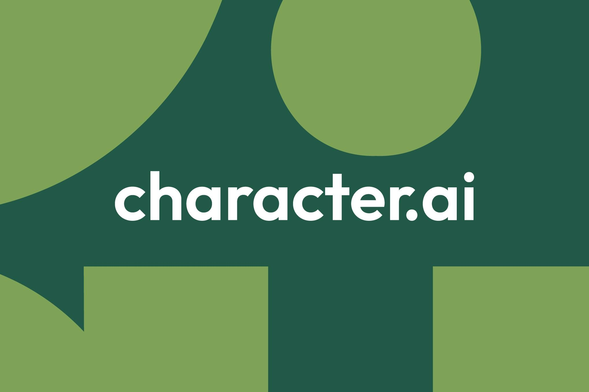

Character.AI — один из первых хитов генеративного ИИ, платформа ботов-собеседников с миллионами пользователей, — подала заявление о добровольном банкротстве по главе 11 в суде по делам о банкротстве округа Делавэр. Компания сама объясняет шаг в официальном блоге: за прошлый год ей пришлось «предпринять серьёзные шаги, чтобы удержать бизнес в условиях значительных юридических, регуляторных и операционных препятствий». Судебные документы оценивают обязательства компании в $50–100 млн. Цель процедуры — надзор суда за продажей актива, процесс рассчитан до конца ноября — начала декабря 2026 года.
Главным претендентом на активы выступает Disney, которая подаст базовую заявку на конкурсных торгах: $20 млн за пакет пока не раскрываемых активов, плюс неполная (неэксклюзивная) лицензия на интеллектуальную собственность и переходная поддержка за счёт нанятых бывших сотрудников Character. Ирония в том, что ещё недавно Disney засыпала стартап претензиями — вплоть до писем «прекратить нарушение» — за фанатских чатботов Эльзы, Человека-паука и Дарта Вейдера. Теперь тот же Disney переманивает и людей: экс-гендиректор Character.AI Карандип Ананд уже занял кресло технического директора медиаимперии, а за ним ждут «ряд технических специалистов» стартапа.
Character.AI пережила два удара, типичных для Кремниевой долины последних лет. Первый — «аква-наём»: в 2024 году Google за $2 млрд переманил основателей Ноама Шазира и Даниэля Де Фрейтаса с командой, оставив компанию фактически без технического ядра. Второй — иски о безопасности: семьях погибших подростков предъявляли претензии к чатботам, а правообладатели доканчивали репутацию. Компания на фоне всего этого успевала выпускать обновления и даже пробовала формат микросериалов, но выручки это не спасло.
Платформа пока работает как обычно: подписки активны, тарификация не менялась, об изменениях обещают предупредить заранее. Данные по-прежнему защищает прежняя политика конфиденциальности, экспорт переписки и удаление аккаунта доступны в приложении и на сайте. Но в блоге висит прямое предупреждение: если подходящая заявка так и не появится, «платформа будет свёрнута». Так что до декабря рынок смотрит, найдёт ли чатбот-компаньон второй шанс или станет первой громкой могилой поколения 2023 года.